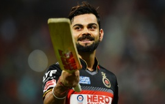

"Cricket is a bat-and-ball game played between two teams of eleven players on a cricket field, at the centre of which is a rectangular 22-yard-long pitch with a wicket (a set of three wooden stumps) sited at each end. One team, designated the batting team, attempts to score as many runs as possible, whilst their opponents field. Each phase of play is called an innings. After either ten batsmen have been dismissed or a set number of overs have been completed, the innings ends and the two teams then swap roles. The winning team is the one that scores the most runs, including any extras gained, during their one or two innings.
At the start of each game, two batsmen and eleven fielders enter the field of play. The play begins when a designated member of the fielding team, known as the bowler, delivers the ball from one end of the pitch to the other, towards a set of wooden stumps, in front of which stands one of the batsmen, known as the striker. The striker's role is to prevent the ball from hitting the stumps by use of his bat, and simultaneously to strike it well enough to score runs. The other batsman, known as the non-striker, waits at the opposite end of the pitch near the bowler. The bowler's objectives are to prevent the scoring of runs and to dismiss the batsman.
A dismissed batsman must leave the field, and a teammate replaces him at the crease ".
The most common forms of dismissal are bowled, when the bowler hits the stumps directly with the ball, leg before wicket, when the batsman prevents the ball from hitting the stumps with his body instead of his bat, and caught, when the batsman hits the ball into the air and it is intercepted by a fielder before touching the ground. Runs are scored by two main methods: either by hitting the ball hard enough for it to cross the boundary, or by the two batsmen swapping ends by each simultaneously running the length of the pitch in opposite directions whilst the fielders are retrieving the ball. If a fielder retrieves the ball quickly enough to put down the wicket with a batsman not having reached the crease at that end of the pitch, that batsman is dismissed (a run-out occurs). Adjudication is performed on the field by two umpires.
The laws of cricket are maintained by the International Cricket Council (ICC) and the Marylebone Cricket Club (MCC). There are various formats ranging from Twenty20, played over a few hours with each team having a single innings of 20 overs (i.e. 120 deliveries), to Test cricket, played over five days with unlimited overs and the teams playing two innings apiece. Traditionally cricketers play in all-white kit, but in limited overs cricket they wear club or team colours. In addition to the basic kit, some players wear protective gear to prevent injury caused by the ball, which is a hard, solid object made of compressed leather enclosing a cork core.
HISTORY
Origin
The origin of cricket is unknown. There is a consensus of expert opinion that it was probably created during Saxon or Norman times by children living in the Weald, an area of dense woodlands and clearings in south-east England that lies across Kent and Sussex.[1] The first definite reference is dated Monday, 17 January 1597 (Julian date; see below).
There have been several speculations about the game's origins including some that it was created in France or Flanders. The earliest of these speculative references is dated Thursday, 10 March 1300 (Julian date) and concerns the future King Edward II playing at "creag and other games" in both Westminster and Newenden. It has been suggested that "creag" was an Olde English word for cricket but expert opinion is that it was an early spelling of "craic", meaning "fun and games in general".[2]
It is generally believed that cricket survived as a children's game for many generations before it was increasingly taken up by adults around the beginning of the 17th century. Possibly cricket was derived from bowls, assuming bowls is the older sport, by the intervention of a batsman trying to stop the ball from reaching its target by hitting it away. Playing on sheep-grazed land or in clearings, the original implements may have been a matted lump of sheep’s wool (or even a stone or a small lump of wood) as the ball; a stick or a crook or another farm tool as the bat; and a stool or a tree stump or a gate (e.g., a wicket gate) as the wicket.[3]
First definite reference
John Derrick was a pupil at the Royal Grammar School, then the Free School, in Guildford when he and his friends played creckett circa 1550
A 1597 court case in England concerning an ownership dispute over a plot of common land in Guildford, Surrey mentions the game of creckett. A 59-year-old coroner, John Derrick, testified that he and his school friends had played creckett on the site fifty years earlier when they attended the Free School. Derrick's account proves beyond reasonable doubt that the game was being played in Surrey circa 1550, and is the earliest universally accepted reference to the game.[4][5]
The first reference to cricket being played as an adult sport was in 1611, when two men in Sussex were prosecuted for playing cricket on Sunday instead of going to church.[6] In the same year, a dictionary defined cricket as a boys' game and this suggests that adult participation was a recent development.[4]
Derivation of the name of "cricket"
A number of words are thought to be possible sources for the term "cricket". In the earliest definite reference, it was spelled creckett. The name may have been derived from the Middle Dutch krick(-e), meaning a stick; or the Old English cricc or cryce meaning a crutch or staff, or the French word criquet meaning a wooden post. [3] The Middle Dutch word krickstoel means a long low stool used for kneeling in church; this resembled the long low wicket with two stumps used in early cricket.[7] According to Heiner Gillmeister, a European language expert of the University of Bonn, "cricket" derives from the Middle Dutch phrase for hockey, met de (krik ket)sen (i.e., "with the stick chase").[8]
It is more likely that the terminology of cricket was based on words in use in south-east England at the time and, given trade connections with the County of Flanders, especially in the 15th century when it belonged to the Duchy of Burgundy, many Middle Dutch[9] words found their way into southern English dialects.[10]
Early 17th century
A number of references occur up to the English Civil War and these indicate that cricket had become an adult game contested by parish teams, but there is no evidence of county strength teams at this time. Equally, there is little evidence of the rampant gambling that characterised the game throughout the 18th century. It is generally believed, therefore, that village cricket had developed by the middle of the 17th century but that county cricket had not and that investment in the game had not begun.[11]
The Commonwealth
After the Civil War ended in 1648, the new Puritan government clamped down on "unlawful assemblies", in particular the more raucous sports such as football. Their laws also demanded a stricter observance of the Sabbath than there had been previously. As the Sabbath was the only free time available to the lower classes, cricket's popularity may have waned during the Commonwealth. However, it did flourish in public fee-paying schools such as Winchester and St Paul's. There is no actual evidence that Oliver Cromwell's regime banned cricket specifically and there are references to it during the interregnum that suggest it was acceptable to the authorities provided that it did not cause any "breach of the Sabbath".[11] It is believed that the nobility in general adopted cricket at this time through involvement in village games.[4]
Gambling and press coverage
Cricket certainly thrived after the Restoration in 1660 and is believed to have first attracted gamblers making large bets at this time. In 1664, the "Cavalier" Parliament passed the Gaming Act 1664 which limited stakes to £100, although that was still a fortune at the time,[11] equivalent to about £14 thousand in present-day terms [12]. Cricket had certainly become a significant gambling sport by the end of the 17th century. There is a newspaper report of a "great match" played in Sussex in 1697 which was 11-a-side and played for high stakes of 50 guineas a side.[6]
With freedom of the press having been granted in 1696, cricket for the first time could be reported in the newspapers. But it was a long time before the newspaper industry adapted sufficiently to provide frequent, let alone comprehensive, coverage of the game. During the first half of the 18th century, press reports tended to focus on the betting rather than on the play.[11]
18th-century cricket
See also: History of cricket to 1725 and History of cricket (1726–40)
Patronage and players
Gambling introduced the first patrons because some of the gamblers decided to strengthen their bets by forming their own teams and it is believed the first "county teams" were formed in the aftermath of the Restoration in 1660, especially as members of the nobility were employing "local experts" from village cricket as the earliest professionals.[4] The first known game in which the teams use county names is in 1709 but there can be little doubt that these sort of fixtures were being arranged long before that. The match in 1697 was probably Sussex versus another county.
The most notable of the early patrons were a group of aristocrats and businessmen who were active from about 1725, which is the time that press coverage became more regular, perhaps as a result of the patrons' influence. These men included the 2nd Duke of Richmond, Sir William Gage, Alan Brodrick and Edwin Stead. For the first time, the press mentions individual players like Thomas Waymark.
Cricket moves out of England
Cricket was introduced to North America via the English colonies in the 17th century,[10] probably before it had even reached the north of England. In the 18th century it arrived in other parts of the globe. It was introduced to the West Indies by colonists[10] and to India by British East India Company mariners in the first half of the century. It arrived in Australia almost as soon as colonisation began in 1788. New Zealand and South Africa followed in the early years of the 19th century.[4]
Cricket never caught on in Canada, despite efforts by an imperial-minded elite to promote the game as a way of identifying with the British Empire. Canada, unlike Australia and the West Indies, witnessed a continual decline in the popularity of the game during 1860–1960. Linked to upper class British-Canadian elites, the game never became popular with the general public. In the summer season it had to compete with baseball. During the First World War, Canadian units stationed in Britain played baseball, not cricket.[13][14]
Development of the Laws
See also: Laws of Cricket
The basic rules of cricket such as bat and ball, the wicket , pitch dimensions, overs, how out, etc. have existed since
time immemorial. In 1728, the Duke of Richmond and Alan Brodick drew up Articles of Agreement to determine
the code of practice in a particular game and this became a common feature, especially around payment of stake money and distributing the winnings given the importance of gambling.[6]
In 1744, the Laws of Cricket were codified for the first time and then amended in 1774, when innovations such as
lbw , middle stump and maximum bat width were added. These laws stated that the principals shall choose from
amongst the gentlemen present two umpires who shall absolutely decide all disputes. The codes were drawn up by the so-called "Star and Garter Club" whose members ultimately founded MCC at Lord's in 1787. MCC immediately became the custodian of the Laws and has made periodic revisions and recodifications subsequently.[15]
Continued growth in England
The game continued to spread throughout England and, in 1751, Yorkshire is first mentioned as a venue.
[16] The original form of bowling (i.e., rolling the ball along the ground as in bowls) was superseded sometime after 1760 when bowlers began to pitch the ball and study variations in line, length and pace.[11] Scorecards began to be kept on a regular basis from 1772 and since then an increasingly clear picture has emerged of the sport's development.[17]
An artwork depicting the history of the cricket bat
The first famous clubs were London and Dartford in the early 18th century. London played its
matches on the Artillery Ground, which still exists. Others followed, particularly Slindon in Sussex which was backed by the Duke of Richmond and featured the star player Richard Newland. There were other prominent clubs at Maidenhead, Hornchurch, Maidstone, Sevenoaks, Bromley, Addington, Hadlow and Chertsey.
But far and away the most famous of the early clubs was Hambledon in Hampshire. It started as
a parish organisation that first achieved prominence in 1756. The club itself was founded in the 1760s and was well patronised to the extent that it was the focal point of the game for about thirty years until the formation of MCC and the opening of Lord's Cricket Ground in 1787. Hambledon produced several outstanding players including the master batsman John Small and the first great fast bowler Thomas Brett. Their most notable opponent was the Chertsey and Surrey bowler Edward "Lumpy" Stevens, who is believed to have been the main proponent of the flighted delivery.
It was in answer to the flighted, or pitched, delivery that the straight bat was introduced. The old "hockey stick" style of bat was only really effective against the ball being trundled or skimmed along the ground.
Cricket and crisis
A Game of Cricket at The Royal Academy Club in Marylebone Fields, now Regent's Park, depictiomn
by unknown artist, c. 1790-1799
Cricket faced its first real crisis during the 18th century when major matches virtually ceased
during the Seven Years' War. This was largely due to shortage of players and lack of investment. But the game survived and the "Hambledon Era" proper began in the mid-1760s.
Cricket faced another major crisis at the beginning of the 19th century when a cessation of
major matches occurred during the culminating period of the Napoleonic Wars. Again, the
causes were shortage of players and lack of investment. But, as in the 1760s, the game
survived and a slow recovery began in 1815.
On 17 June 1 815, on the eve of the Battle of Waterloo British soldiers played a cricket
match in the Bois de la Cambre park in Brussels. Ever since the park area where that match took place has been called La Pelouse des Anglais (the Englishmen's lawn).
CLUBS
Club cricket is usually played in league or cup format. Games are limited by either time
or overs. A less common, but more traditional, format is limiting the game by time only. Games can range from a few hours in the evening to two days long.
Saturday league cricket is the most serious format of club cricket. The game will usually
be a limited overs contest of between 40 and 60 overs per side, with bonus points awarded based on runs, wickets, and whether or not the match was a "winning draw" or an outright win to one-side. This format of cricket covers teams that vary in standard between occasional players in the lower divisions to professional and ex-professional players in the highest leagues.
Friendly cricket often takes place on a Sunday. These games tend to follow the more traditional
format of declaration cricket in which a time limit or number of overs - typically 80 to 120 - is set for the whole match. It is then up to the team batting first to declare their innings early enough to give themselves time to bowl the opposition out and force victory. The widest variety of cricket is generally seen in this format, with teams batting second either aggressively chasing a total or attempting to bat conservatively and save the draw.
Evening cricket is the least formal format of club cricket, and the route by which many new
players are introduced to the game. It tends to follow the 20-20 version of the game, with additional time saving measures such as using 15 8-ball overs and not rebowling wides or no-balls (which then count as 2 runs each rather than the standard 1). This version of the game also puts an emphasis on inclusivity, with rules such as each bowler being limited to 2 overs each, and batsmen retiring after reaching 25 runs being used to ensure that every player has a part to play in the outcome of the game.
Finally, in Australia and New Zealand two day matches are occasionally played over both
Saturday and Sunday, or, alternatively, over successive Saturdays (though this can sometimes have unfortunate effects on the game where the condition of the pitch and ground changes radically from one week to the next). These matches usually have two innings per side.
Standard
Most players are amateur, but often cricket clubs employ the services of professionals as
coaches and players. Many of these have played first-class or Test cricket. Also, first-class players returning from injury will sometimes appear at club level as match practice - for example, Shoaib Akhtar during the Pakistan's tour of England in 2006 when he played for Berkswell C.C, a club who are in the well-known Birmingham League.
Standards of play can vary from semi-professional to occasional recreational level. While
many clubs train in similar ways to professional teams, village or park cricket is played purely for fun, and club cricket is often enjoyed as much for the social element as for the competition. This is particularly true in England where the between-innings teas and post-match beer are as important as the result. However, this may vary depending on the standard.
Officials
In the higher leagues, umpires are appointed by the local umpires association to preside over the game and receive a fee and transport allowance for their time. However, as the number of umpires available is typically considerably less than the number of games scheduled, the majority of games are played without externally appointed umpires. In this scenario, members of the batting side not currently involved in the action take it in turns to take on the umpiring responsibilities, typically in stints of 10 or 15 overs at a time. The umpires are expected to remain impartial and unbiased in their judgements, and although a small degree of bias is occasionally perceived, this arrangement functions remarkably well.
The same scenario applies to scorers. Some teams may have an official scorer who attends all of their home games, but often it is simply left to the batting side to keep score. It is expected that this task is undertaken with impartiality. One means for the fielding side to prevent cheating is to ensure that the scoreboard is updated at the end of each over. This way any unexpected change in the number of runs and wickets would quickly be noticed and challenged.
Facilities
Club cricket is played extensively in most cricketing nations, and also by immigrants from cricketing nations. Club cricket can take place on an artificial turf pitch or a more traditional grass pitch. A traditional grass pitch is compulsory in the UK for entry into the higher divisions of club competitions. The rest of the actual field is always natural grass.
Most clubs have their own ground to play on regularly, including a field and pavilion or club house. Some also have nets for practice. These facilities may be owned or leased by the club itself, or may be provided by the local authority. A groundsman may be employed to look after the pitch and the outfield on either a full-time or part-time basis, or in smaller clubs the pitch may be maintained by the players themselves on a voluntary basis.
Clubs without grounds are known as "wandering" or "nomadic" clubs. Examples include the various sides affiliated to larger clubs, such as the club MCC sides and county "Gentlemen of" sides that often play against schools; school old boy sides, such as Eton Ramblers and Harrow Wanderers, which often play in the Cricketers Cup; and amateur clubs such as the Free Foresters, I Zingari and the XL Club.
Whereas professional cricketers often tour abroad during the winter, many amateur cricket clubs play indoor cricket during the winter months, leading to a full 12 month
On 8 November 1933, the Cricket Club of India was incorporated as a company limited by guarantee with its registered office in New Delhi. The principal object of the company was to promote sports in general and cricket in particular throughout the country.
The promoters and some leading men who founded BCCI five years before were the promoters of the Club. Originally, life members, who were later termed as founder members, paid Rs 100 and ordinary members paid Rs 10 for entrance and an annual subscription of Rs 15 .
The CCI is one of the 30 members of the BCCI, the governing body of cricket in India.[3]
The Cricket Club of India was also the birthplace of the famous Chinese-style dish Chicken Manchurian; restaurateur Nelson Wang, who claims to have invented it at the request of a customer in 1975 while working at the CCI as a cook.[4]
Facilities
Main lobby of the club with a replica of the Ranji Trophy in the centre
The CCI also houses in the Brabourne Stadium, which the club owns.[2] The CCI is an affiliated member of the BCCI like any other state association, but unlike any one of them, does not conduct cricket in the state. Mumbai Cricket Association and Maharashtra Cricket Association which conduct cricket in Mumbai and rest of Maharashtra respectively. The stadium has one of the best cricket pitches and grounds in the region. It also has tennis courts,[5] a swimming pool,[6] fitness centers, a billiards room, squash courts, badminton courts, table tennis tables, cafes, bars, a library, a reading room and a banquet hall.[7] It is very difficult to get membership into this exclusive club.[8]
The stadium also served as the headquarters of the BCCI, the governing body of Indian cricket.[9]
Kingfisher Open
The Men's Doubles finals in 2007
In 2006 and 2007, the CCI tennis courts were the stage for the Kingfisher Airlines Tennis Open, an ATP Tour tournament, previously held in Shanghai from 1995 to 2004 and in Vietnam in 2005.[5][10]Kingfisher Airlines were the official sponsors. The tournament was presented by the Government of Maharashtra, India. The tournament was played from 25 September 2006 to 2 October 2006.
ICC Champions trophy
The Cricket Club of India Limited staged 5 matches of the ICC Champions Trophy in 2006 including the final between Australia and West Indies played on 5 November 2006. [11]
2013 ICC Women's world cup
Brabourne stadium hosted the 2013 ICC women's world cup along with the MIG Cricket club , Bandra, the DREIMS ground and the Barabati Stadium both situated in Cuttack. Brabourne Hosted the final of the event in which, Australia emerged as the winners after beating the West Indies comprehensively.
Membership Scam
In 2013 an internal inquiry set up by the club concluded that at least 11 members got into the 80-year-old institution in the last three years through forgery committed in collusion with a club insider. Several CCI members revealed that the fraud was committed by an ingenious and yet simple method of replacing personal details of certain deceased members with those of these new entrants. "Files of certain members who had died some time back and whose files were lying dormant were tampered with by someone on the inside who had access," said a source close to the investigation, who did not wish to be identified. "Names and other details of aspiring members were then put in the old files to make it look as if the old member (deceased) never existed in the club records."[12]
The Economic Offences Wing (EOW) of the Mumbai police arrested two businessmen, Ketan Thacker and Nimai Agrawal in connection with the fake memberships scam.[13]
REVIEW
Cricket club apartment manager #ANA# is one of the notorious and most worst manager I have ever dealt with. She is retaliate in nature, worst in behavior and psychopath. She victimized atleast 5 renters (as far as I know). I don't… Full Review ▶
08/22/16
Resident
I moved into a 3 bedroom apartment in July 2015 and I could not wait until my lease was up. The first night I stayed in my apartment I saw 5 German roaches and it only got worse from there. I… Full Review ▶
07/06/16
Resident
I wish I had read the reviews before moving in here and wish I currently could afford to leave. I was promised a washer and dryer for my unit and did not receive one so I was forced to purchase because… Full Review ▶
1
1
Manager Response
04/15/16
Resident
It is glad to write a review for the Cricket Club Apartments in Orlando. I had a really nice time and it is the most frenziedly community I ever met.Also, I want to thank full for Mrs.Dilicia and Mrs.BB for the… Full Review ▶
03/24/16
Resident
awesome property and staff close to everything Full Review ▶
1
1
Manager Response
08/17/15
Resident
It was rocky moving in. I have never lived in an apartment. I hear the upstairs neighbor's heavy foot, but most everyone is pleasant. I was afraid it was going to be loud due to, it's a collage town. But am… Full Review ▶
08/04/15
Resident
Worst place i have ever lived at!! Lots of Roaches!!! Roaches are everywhere!!! In he Refrigerator, the A/c Vents, in the Walls, behind the Stove!! I Hate this apartment complex!!! Disgusting!!! Management do not Care at all!! Bats and Spiders are… Full Review ▶
5
1
Manager Response
05/01/15
Resident
I have been living in Cricket Club for four years. I have to move due to work, and I will miss the place I've call home for the last four years. The staff are very professional and I can't say enough… Full Review ▶
1
02/19/15
Resident
I have been living at Cricket Club Apartments for a year now and I love it starting from the office staff to maintenence they are very nice,work orders get done within same day at times and office staff very helpful and… Full Review ▶
1
02/10/15
Resident
I would not advise anyone to move here. The day I moved in, the apartment was infested with roaches. There were roaches all over, crawling on the walls, in corners, along baseboards, in the kitchen etc. At this point I hadn't… Full Review ▶
REGISTRATION
Registration Form for Cricket Club
TOP PLAYERS
ICC Top 10 Test Batsmen
RankChangeNameRating
1 Steady Steve Smith 886
2 Increase Kane Williamson 841
3 Increase Joe Root 834
4 Increase Younis Khan 832
5 Increase Ajinkya Rahane 825
6 Decrease Hashim Amla 803
7 Steady AB de Villiers 794
8 Increase David Warner 793
9 Decrease Adam Voges 778
10 Steady Misbah-ul-Haq 744
ICC Top 10 ODI Batsmen
Rank
Change
Name
Rating
1
Steady
AB de Villiers
861
2
Steady
Virat Kohli
848
3
Steady
David Warner
786
4
Steady
Quinton de Kock
779
5
Steady
Kane Williamson
770
6
Increase
Hashim Amla
748
7
Increase
Joe Root
747
8
Decrease
Martin Guptil
729
9
Decrease
Rohit Sharma
728
10
Increase
Faf du Plessis
721
ICC Top 10 T20I Batsmen
Rank Change Name Rating
1 Steady Virat Kohli 820
2 Steady Aaron Finch 771
3 Steady Glenn Maxwell 763
4 Steady Martin Guptill 754
5 Steady Faf du Plessis 741
6 Steady Kane Williamson 719
7 Steady Joe Root 708
8 Steady Alex Hales 705
9 Steady Mohammad Shahzad 674
10 Increase Hamilton Masakadza 657
WORLD CUPS
The ICC Cricket World Cup is the international championship of One Day International (ODI) cricket. The event is organised by the sport's governing body, the International Cricket Council (ICC), every four years, with preliminary qualification rounds leading up to a finals tournament. The tournament is one of the world's most viewed sporting events and is considered the "flagship event of the international cricket calendar" by the ICC.[1]
The first World Cup was organised in England in June 1975, with the first ODI cricket match having been played only four years earlier. However, a separate Women's Cricket World Cup had been held two years before the first men's tournament, and a tournament involving multiple international teams had been held as early as 1912, when a triangular tournament of Test matches was played between Australia, England and South Africa. The first three World Cups were held in England. From the 1987 tournament onwards, hosting has been shared between countries under an unofficial rotation system, with fourteen ICC members having hosted at least one match in the tournament.
The finals of the World Cup are contested by the ten full members of the ICC (all of which are Test-playing teams) and a number of teams made up from associate and affiliate members of the ICC, selected via the World Cricket League and a later qualifying tournament. A total of twenty teams have competed in the eleven editions of the tournament, with fourteen competing in the 2015 tournament. Australia has won the tournament five times, with the West Indies, India (twice each) , Pakistan and Sri Lanka (once each) also having won the tournament. The best performance by a non-full-member team came when Kenya made the semi-finals of the 2003 tournament.